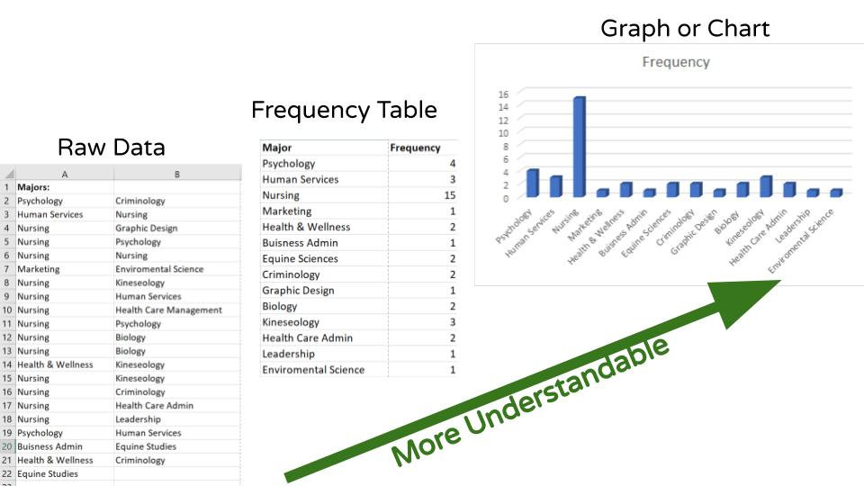

The Histogram is a graph that displays the data by using contiguous vertical bars (unless the frequency of a class is 0) of various heights to represent the frequencies of the classes.
The objective of all these graphing techniques is to make the data which starts as our ugly and raw data into something more understandable!
